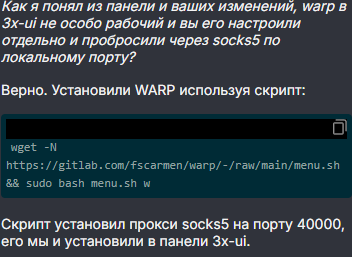

| Ник | Пост | Дата |
|---|---|---|
| Sudo | Доброго времени суток. Прошу помочь мне с конфигурацией wireguard warp на сервере с установленным 3x-ui на сервере хостера aeza Описание ситуации: | 2025-01-19T02:59:31.422Z |
| portos | Если ставите варп средствами панели, то почему-то не работает у меня, и не только на аезе. | 2025-01-19T05:04:14.841Z |
| 0ka(0ka) | не пользуюсь 3x-ui, но если там есть выбор MTU то ставьте 1280, на aeza занижен mtu (1448) поэтому могут быть проблемы на стандартном mtu wireguard (1420) | 2025-01-19T05:08:59.568Z |
| Sudo | Именно там? | 2025-01-19T10:40:17.853Z |
| Sudo | Вообще такое ощущение создаётся что реализация данной функции через панель сделана из рук вон плохо, даже на втором хосте манипуляции с конфигурацией которые не меняют ее, вызывают абсолютные и непонятные ее поломки причем абсолютно без вмешательства, вот если взять просто добавить wireguard warp в список исходящих, не открывать его и вообще не трогать раздел с исходящими подключениями то все будет хорошо работать, видимо warp какой-то очень нежный | 2025-01-19T10:43:14.210Z |
| Sudo | Спасибо за ссылку, обратился в поддержку аезы, посмотрю что скажут там, если ничего то буду пробовать, хотя не знаю чем такой простой способ может помочь исправить проблему, но спасибо | 2025-01-19T10:44:56.892Z |
| Sudo | И так, пообщавшись с поддержкой aeza, мне помогли починить работу warp и по итогу, что мы имеем  Я конечно не супер шарящий чел, скрипты запускать непонятные не очень хорошо, но надеюсь со скриптом все в порядке. Как я понял ничего более после настройки скрипта поддержка не сделала, возможно кроме указания порта и параметра w который устанавливает wireproxy вдогонку. Надеюсь тем кто также столкнулся с такой проблемой это хоть чем-то поможет Гитлаб данного скрипта - Тык В панеле 3x-ui все выглядит примерно так | 2025-01-19T12:30:02.736Z |
{kind=link}
{kind=link}